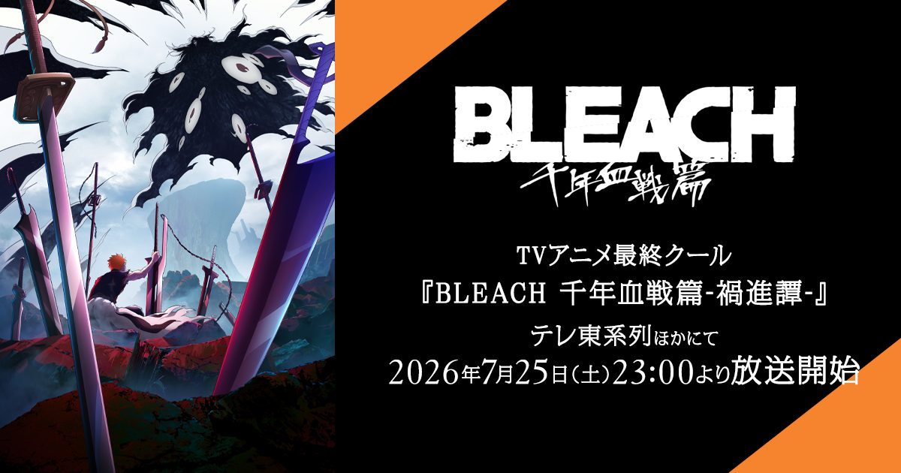

2026-10-19 · 动画深读
今天（10 月 19 日），《BLEACH 千年血战篇 · 相剋譚》第 49 集播出，一周后的 10 月 26 日第 50 集完结——这个从 2004 年讲到 2012 年、沉默十年、又在 2022 年被重新抬上台面的系列，终于要落地。官方给出的说法是「为了进一步打磨品质」才把最后两集推迟了一个月，10 月 16 日放出的 THE LAST PV 把一护与友哈巴赫的终局摊开给你看。但我觉得真正值得聊的不是「最终话好不好看」，而是另一件更罕见的事：这部动画正在重写一个当年被赶完的结局，而原作者就坐在监修席上。它不是补完，是修订。

这次终章的时间线密得有点反常，值得完整列一遍，因为它本身就是信号：
制作侧是 PIERROT FILMS，总导演田口智久、导演村田光，久保带人挂名总监修；角色设计工藤昌史，动作与特效作画监督是酒井敏孝与桥本敬史，音乐依旧是鹭巢诗郎。OP 是 jo0ji 的《I-BULL》，ED 是 9Lana 的《螺旋（Rasen）》。
换句话说：这不是一集动画的播出，而是一整套「完结运营」。影院先行、延期打磨、精选集填档、最终 PV、上映会座谈、完结后 Fes——每一步都在告诉你，他们知道这一刻的分量。
《BLEACH》漫画 2001 年开始连载，2016 年结束，74 卷，全球发行量超过 1.3 亿册。千年血战篇覆盖第 55 到 74 卷，是整部作品的最终章。但这一段在当年的周刊节奏里，是被明显压缩过的——原作最后几周的收尾速度，几乎所有人都能读出来：友哈巴赫这个铺垫了整章的敌人，倒下得比他的登场轻得多。
动画版的做法不是「忠于原作再动画化」，而是在久保带人本人参与的前提下，把这场决战撑大。已经出现的证据有两条，都很硬：
第二点尤其重要。它证明了一件事：动画组不是在做「还原」，是在做「可能性开发」，而且开发出来的东西是被原作者当场点头的。这在少年漫改里极其少见。
官方已确认两位新角色：黑崎一勇（Kazui Kurosaki，一护与露琪亚之子）由橘あずさ配音，阿散井莓花（Ichika Abarai，恋次与织姬之女）由大桥彩香配音。这两人出现在原作第 686 话「Death and Strawberry」之后的十年后闪回里——也就是那个当年只给了寥寥数页、被读者念叨了十年的「jump-forward」。
声优公布这个动作本身，比任何宣传语都诚实：它确认了动画会正式做那段 epilogue，而不只是在决战打完时闪两格。如果第 50 集真的把「十年后」做成一整段有呼吸的尾声，那么《BLEACH》动画版的性质就变了——它不再是一部改编作，而是这个故事的权威版本。以后有人问「BLEACH 的结局是什么」，答案会是动画，不是 74 卷单行本。
这也是为什么这次延期值得单独讨论。为了最后两集多要一个月，在周更番剧里是罕见的自我主张——对照 MAPPA《咒术回战》最终话在质量上翻车的争议，PIERROT FILMS 这笔账算得很清楚：晚一个月会被骂一周，糊一次会被骂十年。
| 作品 | 改编时的原作状态 | 动画怎么处理的结局 | 结果 |
|---|---|---|---|
| 钢之炼金术师（2003） | 原作远未完结 | 硬原创一个结局，另起世界观 | 口碑两极，但成为独立经典 |
| 钢之炼金术师 FA（2009） | 原作已完结 | 全忠实，几乎逐话对位 | 被公认为「正解版本」 |
| 恶魔人 Crybaby（2018） | 原作完结数十年 | 保留结局，重构过程与调性 | 「忠于精神不忠于分镜」的范本 |
| 进击的巨人（最终季） | 原作刚完结 | 结局微调镜头与台词节奏 | 争议被动画端部分中和 |
| BLEACH 千年血战篇（2022–2026） | 原作完结十年，且结局本身有遗憾 | 原作者监修下扩展决战、新增形态、正式做尾声 | 有可能取代漫画成为权威版本 |
这个表最下面一行的特殊性在于：原作有遗憾、原作者在场、动画有资源——三个条件同时成立的机会，一个世代碰不到几次。它跟 FA 那种「忠实即正义」不是一回事，也跟 2003 版那种「原作没写完只能自己编」不是一回事。
很多人把这次延期当成「制作崩了」，但回头看整个 TYBW 的做法：四部曲（Blood Warfare / Separation / Conflict / Calamity）之间都留了空档，这次中间插入的是「climax selection」精选集回放。他们从 2022 年起就在用「我自己决定什么时候播」代替「周更不能断」。这是把节奏权从档期手里拿回来的做法，代价是热度波动，收益是最终话不需要赶工。对一部要靠最终话定生死的二十年 IP 来说，这笔交换是对的。
《BLEACH》的结局争议，本质上不是读者不喜欢那个结局，而是那个结局没有获得它应得的篇幅。久保带人当年是在健康与周刊双重压力下收的尾。现在动画给了他第二次机会，而且是以总监修的身份坐在那里看别人把自己的分镜撑开。
这件事的意义大于任何一场打戏：它承认了「作品完成」和「作品讲完」是两件事。漫画在 2016 年完成，但要到 2026 年才可能讲完。中间这十年，是一个作者拿回自己结局的过程。如果你只把它当成「又一部热血漫改完结了」，会错过今年最值得记的一个行业样本。
少年漫 IP 的完结通常有三条路，而 BLEACH 的排期表已经暗示了它选哪条：
从 10 月 25 日映后座谈的阵容（久保 + 两位主役 + 导演 + 制片）看，那天大概率会有一句关于「接下来」的话。这是完结周里唯一真正有信息量的时刻，比第 50 集本身更值得盯。
2004 到 2012 年，366 集；然后是十年什么都不发生；2022 年 TYBW 开播，到 2026 年 10 月 26 日收尾。四部曲、四年、一次延期，以及一个原作者坐在监修席上看着自己的结局被撑开的罕见场面。
这个十月对动画观众来说是挤的——《龙珠 Daima》、《咒术回战》第三季、《胆大党》都在同一档。但对《BLEACH》来说，挤不挤已经不重要了：它要的不是收视，是一个说得出口的句号。而从这个月给出的一整套动作看，他们打算认真写这个句号。
今天先看第 49 集。然后别急着讨论第 50 集好不好看——先看最后十分钟， 那才是这次终章真正的落笔处。